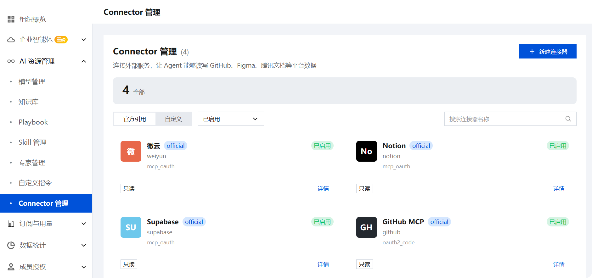
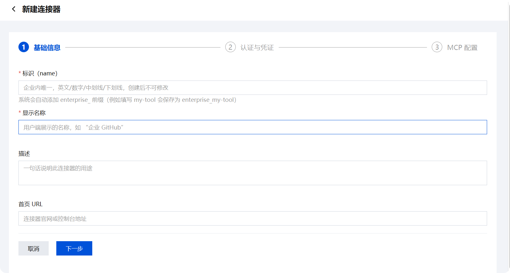
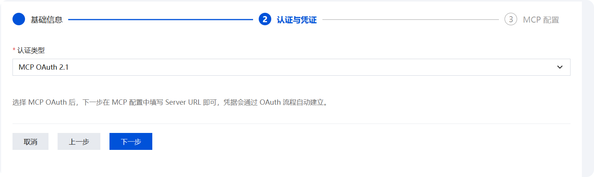
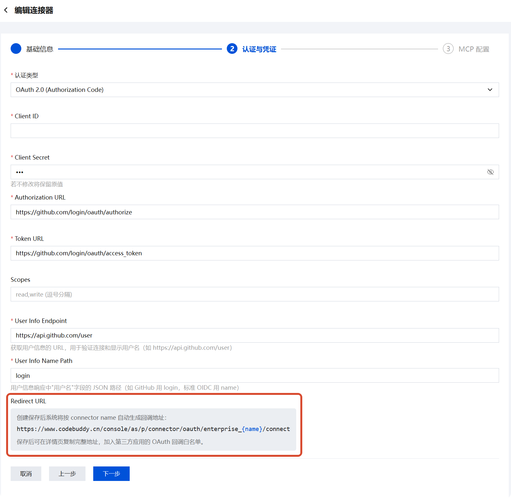
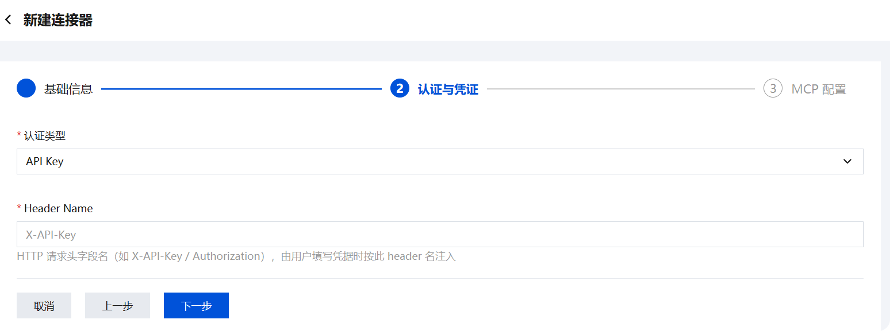
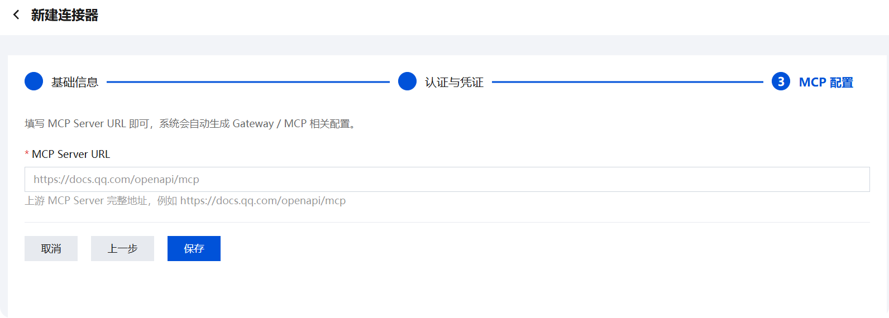
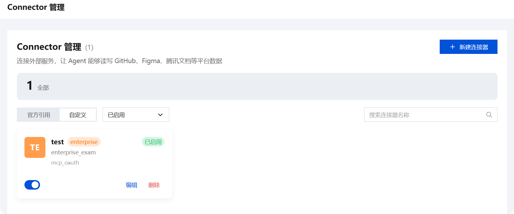
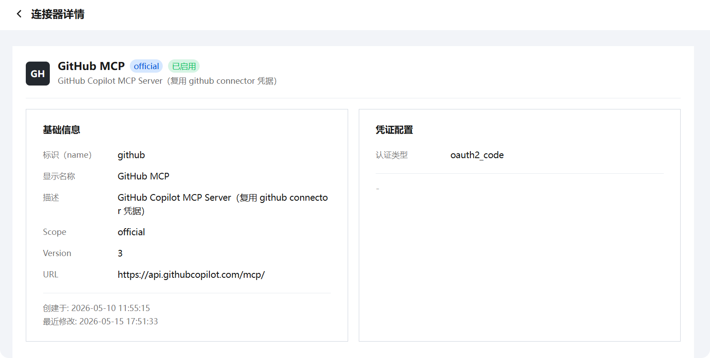

Connector 管理
连接外部服务，让 Agent 能够读写 GitHub、Figma、腾讯文档等平台数据。
概述
Connector 管理为企业提供统一的外部服务接入能力。通过配置连接器，企业的 AI Agent 可以安全地访问和操作第三方平台的数据与能力。系统内置官方连接器（如 GitHub、Notion、Supabase），同时支持管理员根据业务需要创建自定义连接器。
每个连接器封装了认证凭证、MCP（Model Context Protocol）服务端配置、工具权限过滤、超时策略以及自定义请求头等完整接入配置。创建后，连接器在组织内可用，成员无需单独配置即可通过 Agent 使用对应的外部服务能力。

快速开始
三步完成一个自定义连接器的创建：
- 填写基础信息：定义连接器的标识、显示名称和描述
- 配置认证凭证：选择认证方式并填写所需的凭据参数
- 设置 MCP 服务端：指定上游 MCP Server 地址
完成以上步骤后，新连接器出现在连接器列表中，状态为待启用。
创建自定义连接器
在 Connector 管理页面点击右上角 「+ 新建连接器」 进入创建向导。向导分为三个步骤，按顺序完成后保存即可。
步骤一：填写基础信息

填写连接器的身份信息：
- 标识（name）：连接器的唯一英文标识，仅支持英文、数字、中划线和下划线。创建后不可修改。系统会自动添加
enterprise_前缀（例如填写my-tool，实际存储为enterprise_my-tool）。 - 显示名称：面向用户的名称，如「企业 GitHub」。
- 描述：一句话说明此连接器的用途。
- 首页 URL：所连接服务的官方网站或管理控制台地址（可选）。
确认无误后点击 下一步。
步骤二：配置认证与凭证
选择适合目标服务的认证类型，系统支持三种方式：
MCP OAuth 2.1
选择此方式后，只需在第三步填写 MCP Server URL 即可。认证凭据将通过标准的 OAuth 流程自动建立，无需手动填写 Client ID 或 Secret。
适用于：已实现 MCP OAuth 2.1 规范的服务端。

OAuth 2.0（Authorization Code）

适用于标准 OAuth 2.0 授权码流程。将底部的Redirect URL填入第三方应用所需的回调链接条目（回调白名单）中。
完成配置后在企业后台继续填写以下字段：
- Client ID：应用在第三方平台注册获得的客户端 ID
- Client Secret：对应的客户端密钥
- Authorization URL：第三方 OAuth 授权端点地址
- Token URL：令牌交换端点地址
- Scopes：申请的权限范围，逗号分隔（如
read,write） - User Info Endpoint：获取用户信息的 API 地址
- User Info Name Path：用户名字段在响应 JSON 中的路径（
login或name）
API Key
最简单的认证方式。仅需填写：
- Header Name：HTTP 请求头字段名（默认
X-API-Key），也可设为Authorization等其他值。用户在使用时填写对应的 Header 值即完成鉴权。
适用于：使用静态 API Key 进行认证的服务（如部分内部 API 网关）。

步骤三：配置 MCP 服务端
填写面向第三方 API 的 MCP 协议接入地址，由服务方原生提供、平台托管、或企业自行部署均可。
示例
MCP Server URL： https://docs.qq.com/openapi/mcp
系统将基于此地址自动生成 Gateway 和 MCP 相关配置。

填写完成后点击 保存，连接器创建完成。

管理已有连接器
进入 Connector 管理 页面可查看所有已配置的连接器。页面以卡片形式呈现每个连接器的基本信息：
- 图标 + 名称：连接器标识和显示名称
- 标识：
official表示官方内置连接器；无标签表示自定义连接器 - 认证类型：显示底层使用的认证协议类型（如
mcp_oauth、oauth2_code） - 操作：自定义连接器支持启用、编辑、删除等操作。编辑时标识（name）不支持修改。
页面顶部提供以下筛选能力：
| 维度 | 选项 | 说明 |
|---|---|---|
| 来源 | 官方引用 / 自定义 | 区分系统内置和管理员自建 |
| 状态 | 已启用 | 仅显示已激活的连接器 |
| 关键词 | 搜索框 | 按连接器名称模糊匹配 |
查看连接器详情

点击连接器卡片上的 详情 进入详情页，以双栏布局展示完整的配置信息：
基础信息
| 字段 | 说明 |
|---|---|
| 标识（name） | 系统内部唯一标识 |
| 显示名称 | 面向用户展示的名称 |
| 描述 | 连接器用途说明 |
| Scope | 权限级别（如 official） |
| Version | 连接器版本号 |
| URL | 关联的服务地址 |
| 创建于 / 最近修改 | 时间戳记录 |
凭证配置
| 字段 | 说明 |
|---|---|
| 认证类型 | 当前使用的认证方式（如 oauth2_code） |
MCP 配置
展示连接器接入上游 MCP Server 的完整配置信息，分为 MCP 服务端配置 和 Gateway 网关配置 两部分：
MCP 服务端配置
| 字段 | 示例值 | 说明 |
|---|---|---|
| MCP Server URL | https://docs.qq.com/openapi/mcp | MCP 服务的接入地址，即步骤三填入的地址 |
| Transport | streamable_http | MCP 通信传输类型 |
| Server Name | enterprise_test | MCP 服务端的逻辑标识名 |
| Path | /openapi/mcp | MCP 协议端点的路径后缀 |
Gateway 网关配置
系统基于 MCP Server URL 自动解析生成的 Gateway 路由配置：
| 字段 | 示例值 | 说明 |
|---|---|---|
| Module Name | enterprise_test | Gateway 模块标识 |
| Upstream Host | docs.qq.com | 上游服务的主机地址（域名） |
| Proto | https | 上游服务的通信协议 |
| Path Prefix | /openapi/mcp | 请求转发时的路径前缀 |
| Injector Type | default | 凭证注入器类型，按步骤二配置的认证方式自动处理 |
说明
仅自定义连接器的详情页显示该内容。
注意事项与重点提示
信息收集与使用
| 收集项 | 类型 | 用途 |
|---|---|---|
| 企业账号信息（登录凭据） | 必要 | 登录企业管理后台，创建和管理连接器 |
| 连接器标识（name） | 必要 | 系统内部唯一标识，用于引用和调用该连接器，创建后不可修改 |
| 认证凭据（Client ID、Client Secret、API Key 等） | 必要 | 完成与第三方服务的身份认证，使 Agent 能够以代理身份访问外部 API |
| MCP Server URL | 必要 | 指定上游 MCP 服务的接入端点，连接器通过此地址与第三方服务通信 |
| 自定义请求头配置 | 非必要 | 仅在目标服务需要额外的 HTTP 头（如 X-Custom-Header）时才需填写 |
| 首页 URL（可选） | 非必要 | 仅在管理员希望为连接器关联官方主页时提供，用于展示和跳转 |
类型判定标准：
- 「必要」：创建连接器时必须提供的信息（如标识、认证凭据、MCP Server URL），缺少则连接器无法正常工作
- 「非必要」：仅在管理员需要额外定制或展示时才涉及的信息（如自定义请求头、首页 URL）
权限边界
- 每个连接器独立授权，不同连接器之间的凭据和访问范围互不影响
- 连接器以配置的认证凭据所对应的第三方账号身份执行操作，访问范围不超出该账号在第三方服务中的已有权限
- 连接器不主动定时抓取第三方数据，仅在 Agent 通过成员对话触发调用时才发起请求
- 连接器的工具权限可通过 Gateway 配置进行过滤，未授权的工具不会暴露给 Agent
安全提示
- API Key 模式下，成员使用连接器时填写的 Header 值即第三方服务的访问密钥，请使用最小权限原则生成凭据
- 管理员可随时通过开关禁用连接器，断开后所有依赖该连接器的 Agent 调用将立即失效
- 建议定期检查连接器的认证凭据有效期和状态，及时轮换过期的 Token 或 Key
积分消耗提醒
连接器自身的读写操作不消耗积分；客户端在对话中对连接器返回的外部数据进行理解、汇总和生成回答时会消耗积分。
第三方共享
- 连接器的认证凭据和 MCP Server URL 指向第三方服务，数据交互原则上为客户端代您与第三方服务通信
- 连接器不会将您的凭据分享给其他成员或组织外主体，每位成员使用连接器时以管理员配置的统一凭据进行身份代理
- 第三方服务的可用性、数据准确性和隐私策略由其自身负责
免责声明
- 自定义连接器的访问范围和工具权限由您的配置决定，客户端不预设范围，请审慎评估后再启用
- 连接器调用所产生的对第三方服务的读写操作，均以您配置的认证凭据身份执行，建议在涉及对外发送、内容修改前再次确认目标对象与内容
- 第三方服务的接口变更或不可用可能导致连接器功能异常，请优先查看该第三方的服务状态与协议
使用建议
- 创建连接器前建议先确认目标服务支持的认证方式（MCP OAuth 2.1、OAuth 2.0 或 API Key），选择与目标服务匹配的认证类型以减少调试成本
- API Key 凭据是访问您第三方账号的钥匙，请妥善保管，避免在公共设备或共享环境中填写；不再使用的连接器建议及时撤销授权
- 连接器创建后先在测试对话中验证功能正常性和工具可用性，确认无异常后再通知团队成员使用
- 定期审查已启用的连接器列表和凭据有效期，清理不再使用的连接器以降低安全隐患
- MCP Server URL 支持服务方原生提供、平台托管或企业自行部署三种方式，建议选择网络延迟最低、稳定性最优的部署方案